先看这里：工作流程
打开占位版，翻到要画的那一页。彩色虚线牌子就是待画的图，上面写着名字和文件名。
地面页照素材包里的底稿画；立牌和角色照下面的规格画。
每样东西单独一个图层，导出成透明 PNG，按任务单起文件名。
把导出的图拖进自检页，红色的项目改掉，直到全部变绿。
按文件夹放好，连同源文件（Procreate 或 PSD）一起交。
占位版里的四种颜色
没有虚线、看起来像原画的，是从你的原画里临时抠出来的（矿石、城堡、云、月亮、铁皮人等）。它们已经能用，有时间可以按规范重画一版更干净的。
五条总规则
地面从正上方看，立牌从正面看
地面页像一张地图，只画平的东西：路、草地、河、地毯。立牌像舞台布景，只画正面：房子画立面，树画侧影。原画大多是斜着看的，这两种画法要分开。
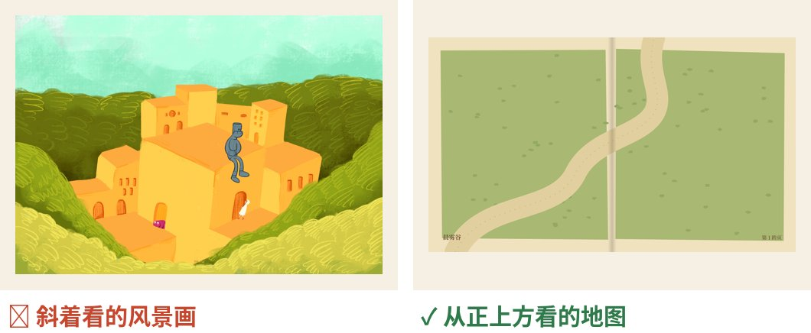
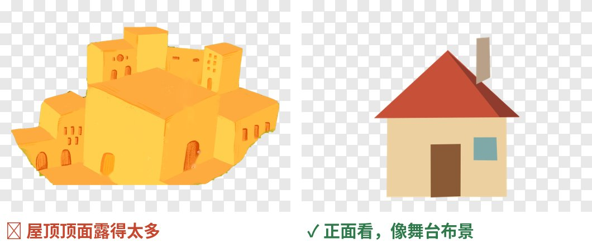
背景透明
立牌、道具、角色部件都要透明背景。导出前关掉背景色图层。在自检页里看到棋盘格，就说明背景是透明的。
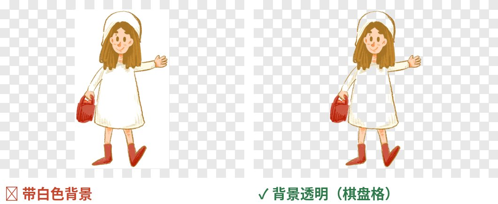
不画影子
立体书会自动打光、自动生成影子。画里再画影子，就会出现两个影子。物体本身的明暗可以画，统一按左上方来光。
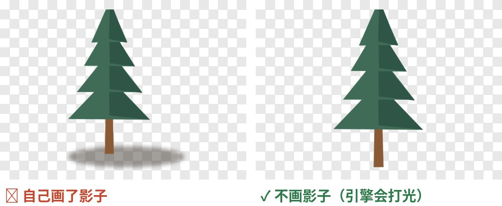
画完整，底边平
原画里被前景挡住的部分，比如城堡的下半截、山丘后面的树，都要补画完整。立牌靠底边“站”在书页上，所以房子、山丘这类东西的底边要画平。树、灯塔这类上宽下窄的不用。
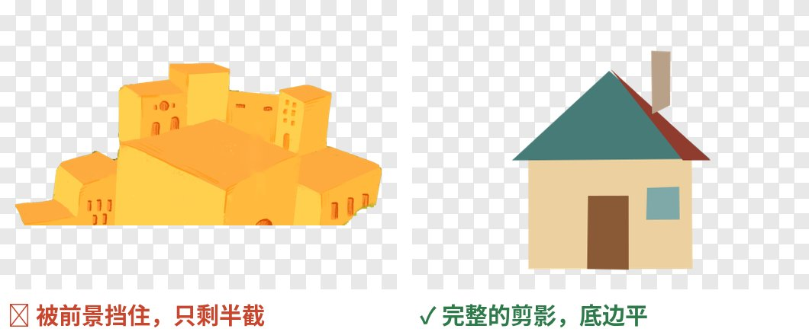
不写字
画面里不要有正文文字，文字由立体书单独显示，还会配朗读。路牌、招牌上的字可以画。如果想保留手写标题字，单独画成一张透明 PNG。
地面页：8 张
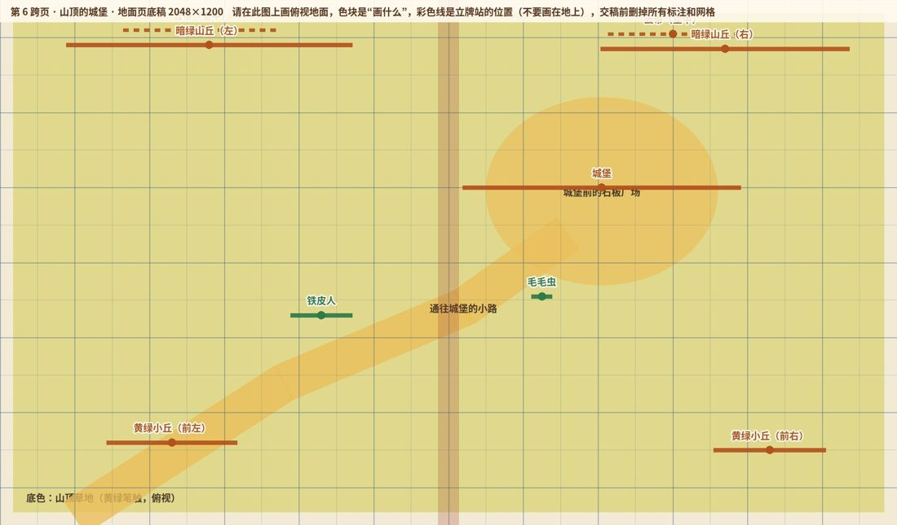
| 尺寸 | 2048 × 1200 像素，横版 |
| 格式 | PNG 或 JPG，铺满，不透明 |
| 文件名 | ground.png，放进对应跨页的文件夹 |
| 视角 | 从正上方往下看。画面上方是远处，下方靠近读者 |
| 中线 | 正中间是书缝，左右各约 24 像素会被书缝吃掉，不要放重要内容 |
| 画什么 | 照底稿的色块：小路、广场、河流、雪地、地毯、落叶…… |
| 不画什么 | 房子、树、人物这些“立起来”的东西；影子；正文文字 |
做法：把底稿放在最下面一层，降低透明度，在上面新建图层画；画完删掉底稿层再导出。彩色横线上方的位置会立着东西，那里的地面可以画得简单些。
立牌和道具：52 张（38 张待画）
| 格式 | 透明 PNG，一张图只放一样东西 |
| 尺寸 | 最长边 800–1500 像素。不用和别的立牌比大小，大小由程序按任务单里的“高度”统一调整 |
| 文件名 | 照任务单，小写英文，比如 big-tree.png |
| 视角 | 正面 |
| 白边 | 不用画。程序会自动给每张立牌加一圈纸白边 |
| 会动的部分 | 单独一张。比如锤子、季节转盘、红心，都和别的东西分开画 |
任务单里的“高度”是什么
它表示这样东西在书里立起来有多高，以铁皮人 = 1.5 为参照。比如“高耸的山峰”是 4.0，大约有铁皮人的两倍半高；“树桩”是 0.45。画的时候心里有这个比例就好，图片本身画多大都可以。
会动的道具，画的时候注意
- 锤子：程序握着锤柄的底端转动，所以锤柄要画完整。
- 季节转盘：程序绕圆心转它，所以要画成正圆，圆心居中。
- 一束阳光：顶窄底宽的光柱，可以半透明。
- 藤绳：细长一条，从山顶垂到地面。
- 红心、果实：单独一个完整的物件。
角色分件：4 个角色
角色要能眨眼、挥手、走路，所以每个角色要拆成几个部件，每个部件一个图层。不用量任何坐标，程序会自动找出每个部件的位置和转动的轴。
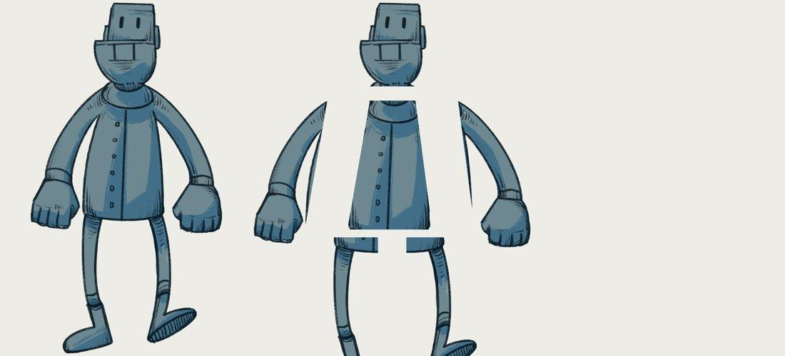
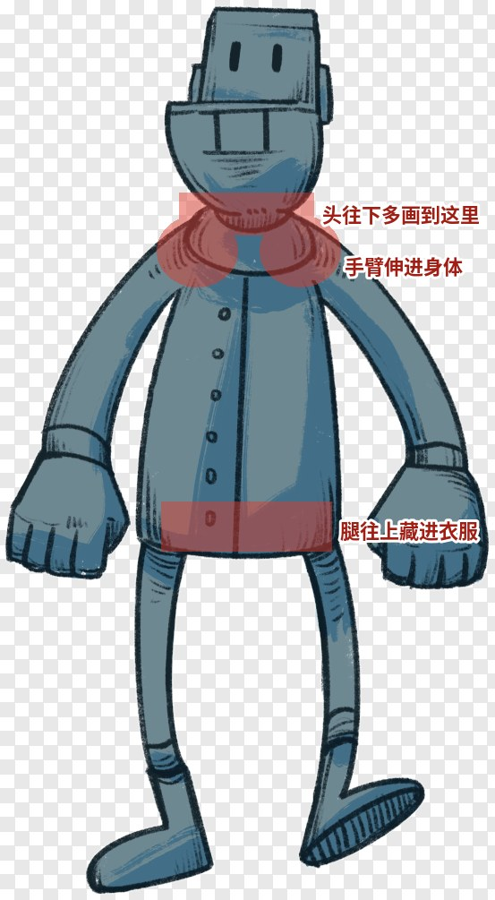
画布和图层
| 画布 | 竖版 1200 × 1600 像素，四个角色都用这个尺寸 |
| 姿势 | 正面站立，和设定稿的正面一致；双手自然下垂，稍微离开身体 |
| 位置 | 角色居中，脚底站在离画布底边约 80 像素的地方（素材包里的画布模板有参考线），头顶离上边留出空白 |
| 背景 | 导出前关掉背景色图层 |
| 重叠 | 手、腿、头和身体连接的一头，要多画约自身长度的十分之一，藏到身体下面 |
| 眼睛 | 单独一层，只画睁开的眼睛。眨眼由程序完成 |
图层从下到上，按这个顺序、用这些名字：
| 图层名 | 画什么 |
|---|---|
| 尾巴 | 没有就不建（四个角色都不用） |
| 左腿 | 画面左边那条腿，连鞋 |
| 右腿 | 画面右边那条腿，连鞋 |
| 后手 | 在身体后面的那只手臂，连手 |
| 身体 | 躯干和衣服 |
| 头 | 头，包括帽子、耳朵、头发、嘴巴、腮红 |
| 眼睛 | 只有眼睛 |
| 前手 | 在身体前面的那只手臂，连手 |
毛毛虫只要“身体”和“眼睛”两层。
| 角色 | 参考 | 现在的状态 | 文件夹 |
|---|---|---|---|
| 铁皮人 | 0558 | 临时切件（会露缝，需画师重画分件） | cast/tin/ |
| 暖心仙子 | 0551 | 整张临时抠图（只能整体动） | cast/fairy/ |
| 毛毛虫 | 0550 | 整张临时抠图 | cast/worm/ |
| 铁匠矮人 | 0578 / 0579 | 占位（没有设定稿） | cast/dwarf/ |
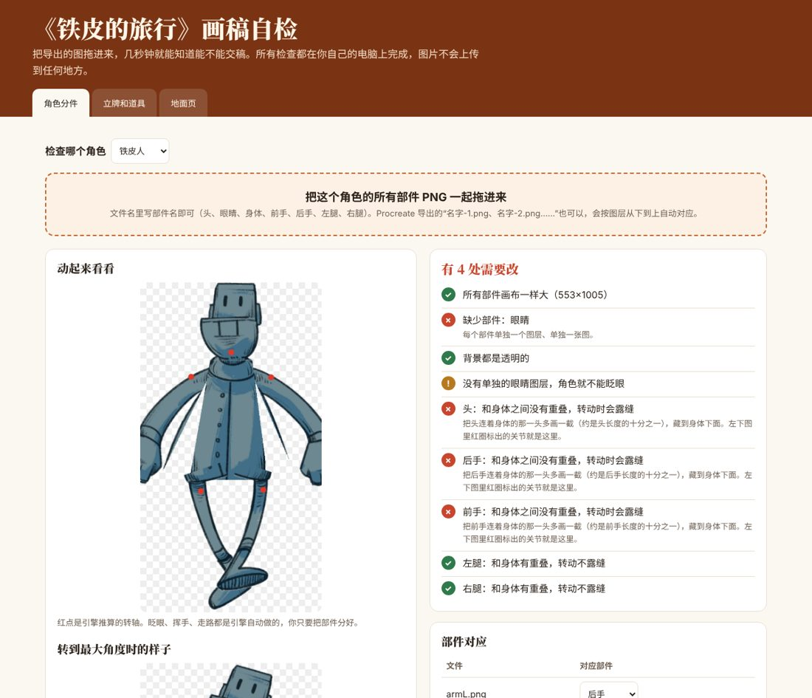
每页任务单
下面 8 张表就是全部要交的图。“状态”是“已有临时图，可直接用”的，可以不画；有时间的话，按规范补画一版更干净的。
第 1 跨页 · 黑暗的山洞 文件夹 ch1-cave/ · 参考原画 0580
这一页的玩法：读者拖着“一束阳光”照到矿石上，提灯的矮人出现。
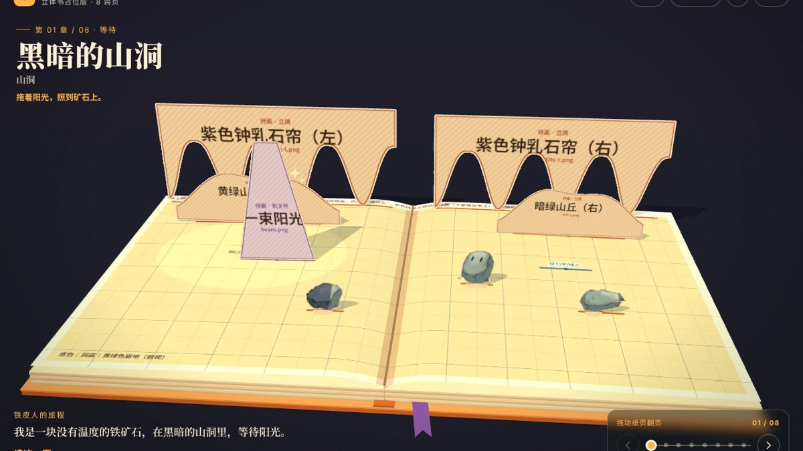
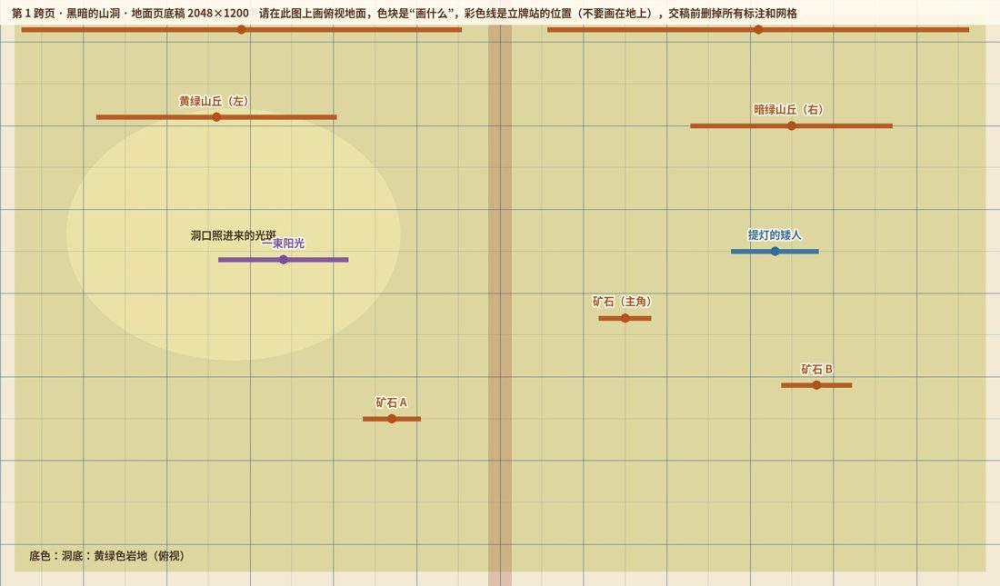
ground.png：照着色块画俯视地面，彩色线是立牌站的位置| 文件名 | 画什么 | 类型 | 参考原画 | 高度 | 状态 |
|---|---|---|---|---|---|
ground.png | 地面页（俯视） 2048×1200，照底稿画，删掉网格和标注 | 地面页 | 0580 | — | 待画 |
stalactite-l.png | 紫色钟乳石帘（左） 像幕布一样挂下来的钟乳石，底边不规则即可，顶边要平 | 立牌 | 0580 顶部 | 2.4 | 待画 |
stalactite-r.png | 紫色钟乳石帘（右） | 立牌 | 0580 顶部 | 2.3 | 待画 |
hill-l.png | 黄绿山丘（左） 补全被矿石挡住的部分 | 立牌 | 0580 中景 | 1.2 | 待画 |
hill-r.png | 暗绿山丘（右） | 立牌 | 0580 中景 | 1.1 | 待画 |
beam.png | 一束阳光 淡黄色、可以半透明的光柱，顶窄底宽；机关：读者拖着它移到矿石上 | 机关件 | 0580 光柱 | 2.6 | 待画 |
ore-main.png | 矿石（主角） 临时抠图可用；最好补画一版无背景杂色的 | 立牌 | 0580 带脸的矿石 | 0.75 | 已有临时图，可直接用 |
ore-a.png | 矿石 A | 立牌 | 0580 左侧矿石 | 0.6 | 已有临时图，可直接用 |
ore-b.png | 矿石 B | 立牌 | 0580 右侧矿石 | 0.5 | 已有临时图，可直接用 |
dwarf-lamp.png | 提灯的矮人 解谜后出现；需先完成矮人设定稿 | 隐藏件（解谜后出现） | 0578 矮人造型 | 1.4 | 待画 |
第 2 跨页 · 矮人的铁匠铺 文件夹 ch2-forge/ · 参考原画 0578 0579
这一页的玩法：读者点锤子敲五下，矿石消失，铁皮人站起来。
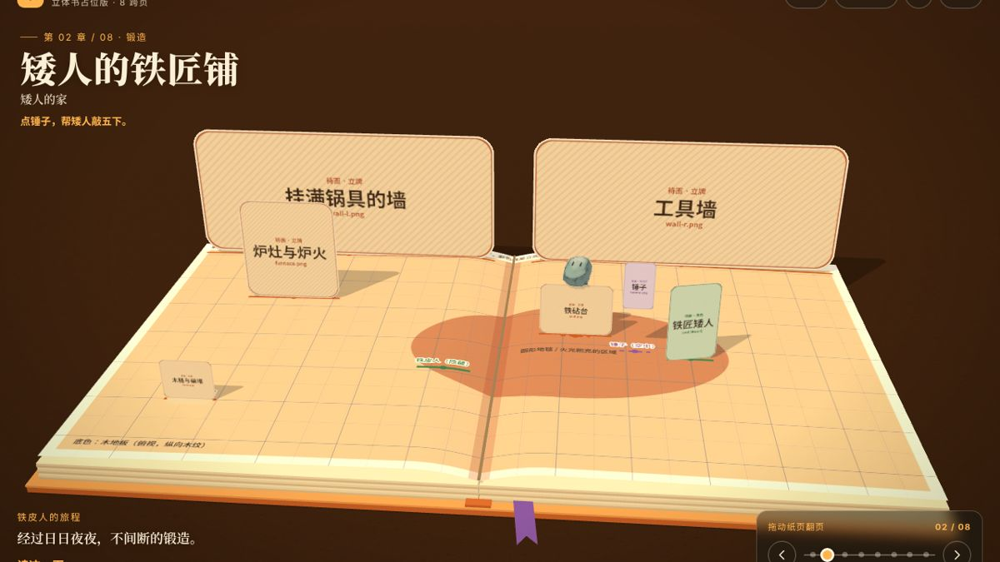
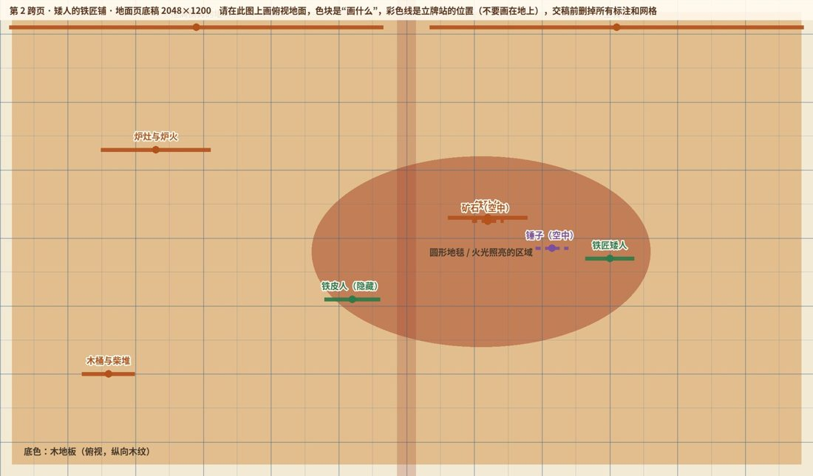
ground.png：照着色块画俯视地面，彩色线是立牌站的位置| 文件名 | 画什么 | 类型 | 参考原画 | 高度 | 状态 |
|---|---|---|---|---|---|
ground.png | 地面页（俯视） 2048×1200，照底稿画，删掉网格和标注 | 地面页 | 0578 0579 | — | 待画 |
wall-l.png | 挂满锅具的墙 墙面加挂着的锅、勺、钟表，顶边可以是屋梁 | 立牌 | 0578 背景 | 2.4 | 待画 |
wall-r.png | 工具墙 | 立牌 | 0579 背景 | 2.4 | 待画 |
furnace.png | 炉灶与炉火 | 立牌 | 0578 / 0579 | 1.8 | 待画 |
anvil.png | 铁砧台 矿石放在上面 | 立牌 | 0578 圆台 | 0.9 | 待画 |
hammer.png | 锤子 轴心在握柄底端；机关：读者点它敲五下 | 机关件 | 0579 矮人手里的锤子 | 0.8 | 待画 |
barrel.png | 木桶与柴堆 | 立牌 | 自由发挥 | 0.65 | 待画 |
第 3 跨页 · 秋天的伐木场 文件夹 ch3-forest/ · 参考原画 0576 0552 0574 0573 0553
这一页的玩法：读者点大树砍三下，秋天的果实掉下来。
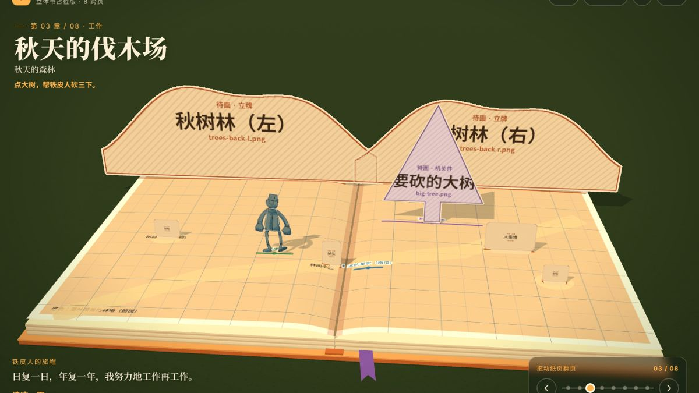
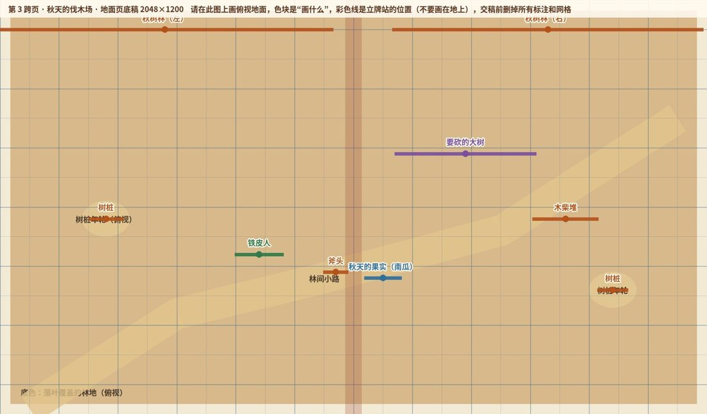
ground.png：照着色块画俯视地面，彩色线是立牌站的位置| 文件名 | 画什么 | 类型 | 参考原画 | 高度 | 状态 |
|---|---|---|---|---|---|
ground.png | 地面页（俯视） 2048×1200，照底稿画，删掉网格和标注 | 地面页 | 0576 0552 0574 0573 0553 | — | 待画 |
trees-back-l.png | 秋树林（左） 红橙色树冠连成一排 | 立牌 | 0576 / 0552 | 2.6 | 待画 |
trees-back-r.png | 秋树林（右） | 立牌 | 0574 | 2.4 | 待画 |
big-tree.png | 要砍的大树 机关：读者点它砍三下；树冠完整，树干下部留出斧痕位置 | 机关件 | 0553 大树 | 3.0 | 待画 |
stump.png | 树桩 | 立牌 | 0552 树桩 | 0.45 | 待画 |
logs.png | 木柴堆 | 立牌 | 0576 / 0552 | 0.7 | 待画 |
axe.png | 斧头 | 立牌 | 0553 | 0.6 | 待画 |
fruit.png | 秋天的果实（南瓜） 解谜后掉下来；单独画一个完整的果实 | 隐藏件（解谜后出现） | 0573 | 0.55 | 待画 |
第 4 跨页 · 走过四季 文件夹 ch4-seasons/ · 参考原画 0572 0571 0570
这一页的玩法：读者转“季节转盘”：雪中树林倒下、春天的花丛和小鸟立起；再转，花丛倒下、夏天的森林和高草立起。
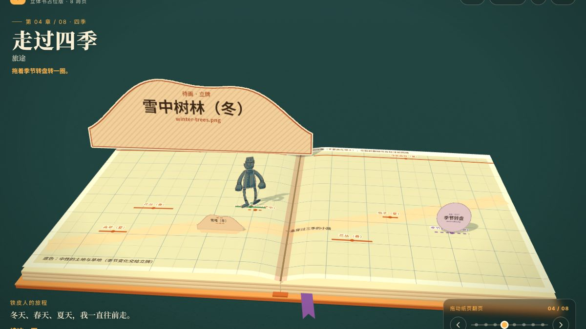
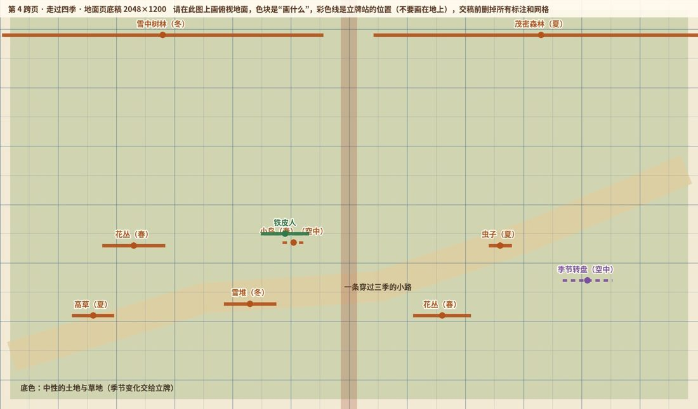
ground.png：照着色块画俯视地面，彩色线是立牌站的位置| 文件名 | 画什么 | 类型 | 参考原画 | 高度 | 状态 |
|---|---|---|---|---|---|
ground.png | 地面页（俯视） 2048×1200，照底稿画，删掉网格和标注 | 地面页 | 0572 0571 0570 | — | 待画 |
winter-trees.png | 雪中树林（冬） | 立牌 | 0572 | 2.4 | 待画 |
snow-pile.png | 雪堆（冬） | 立牌 | 0572 | 0.45 | 待画 |
spring-flowers-a.png | 花丛（春） | 立牌 | 0571 | 0.6 | 待画 |
spring-flowers-b.png | 花丛（春） | 立牌 | 0571 | 0.55 | 待画 |
bird.png | 小鸟（春） | 立牌 | 0571 肩头的小鸟 | 0.32 | 待画 |
summer-forest.png | 茂密森林（夏） | 立牌 | 0570 | 2.5 | 待画 |
tall-grass.png | 高草（夏） | 立牌 | 0570 | 0.8 | 待画 |
bug.png | 虫子（夏） | 立牌 | 0570 / 毛毛虫设定 | 0.3 | 待画 |
season-dial.png | 季节转盘 圆盘四等分：冬、春、夏、秋的小图标；机关：读者拖着它转一圈 | 机关件 | 新画 | 0.85 | 待画 |
第 5 跨页 · 云端的高山 文件夹 ch5-mountain/ · 参考原画 0569 0568 0567
这一页的玩法：读者往下拉藤绳，铁皮人沿着山峰往上爬。
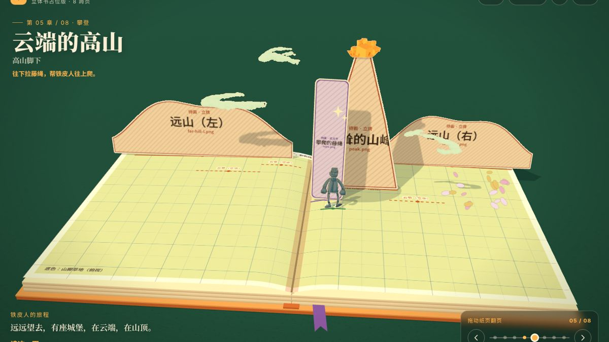
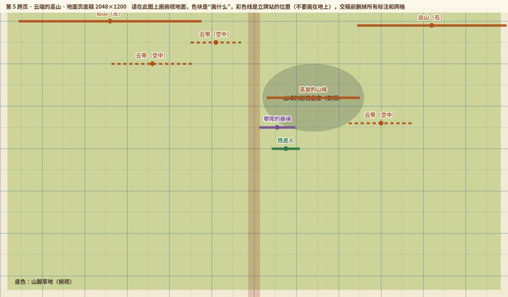
ground.png：照着色块画俯视地面，彩色线是立牌站的位置| 文件名 | 画什么 | 类型 | 参考原画 | 高度 | 状态 |
|---|---|---|---|---|---|
ground.png | 地面页（俯视） 2048×1200，照底稿画，删掉网格和标注 | 地面页 | 0569 0568 0567 | — | 待画 |
far-hill-l.png | 远山（左） | 立牌 | 0569 | 1.8 | 待画 |
far-hill-r.png | 远山（右） | 立牌 | 0569 | 1.6 | 待画 |
peak.png | 高耸的山峰 全书最高的立牌，细长；补全被云挡住的部分 | 立牌 | 0569 / 0567 | 4.0 | 待画 |
cloud-a.png | 云带 | 立牌 | 0.55 | 已有临时图，可直接用 | |
cloud-b.png | 云带 | 立牌 | 0.7 | 已有临时图，可直接用 | |
cloud-c.png | 云带 | 立牌 | 0.5 | 已有临时图，可直接用 | |
rope.png | 攀爬的藤绳 从山顶垂下来的藤绳；机关：读者往下拉，铁皮人往上爬 | 机关件 | 新画 | 3.4 | 待画 |
第 6 跨页 · 山顶的城堡 文件夹 ch6-summit/ · 参考原画 0565 0564 0983
这一页的玩法：读者点门口的毛毛虫，它说主人不在家。
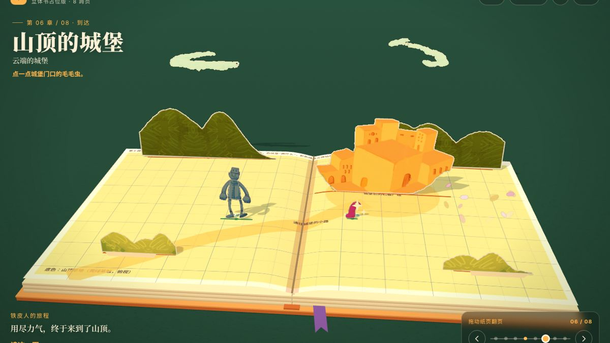
ground.png：照着色块画俯视地面，彩色线是立牌站的位置| 文件名 | 画什么 | 类型 | 参考原画 | 高度 | 状态 |
|---|---|---|---|---|---|
ground.png | 地面页（俯视） 2048×1200，照底稿画，删掉网格和标注 | 地面页 | 0565 0564 0983 | — | 待画 |
hill-back-l.png | 暗绿山丘（左） 临时拼的形状，需按原画补画 | 立牌 | 0983 | 1.6 | 已有临时图，可直接用 |
hill-back-r.png | 暗绿山丘（右） | 立牌 | 0983 | 1.4 | 已有临时图，可直接用 |
castle.png | 城堡 临时抠图可用；需补画被山丘挡住的下沿 | 立牌 | 0983 | 2.2 | 已有临时图，可直接用 |
hill-front-l.png | 黄绿小丘（前左） | 立牌 | 0983 | 0.6 | 已有临时图，可直接用 |
hill-front-r.png | 黄绿小丘（前右） | 立牌 | 0983 | 0.55 | 已有临时图，可直接用 |
第 7 跨页 · 城外的夜 文件夹 ch7-night/ · 参考原画 0563 0566
这一页的玩法：读者点月亮三下（等待了几天），仙子出现在城堡门口。
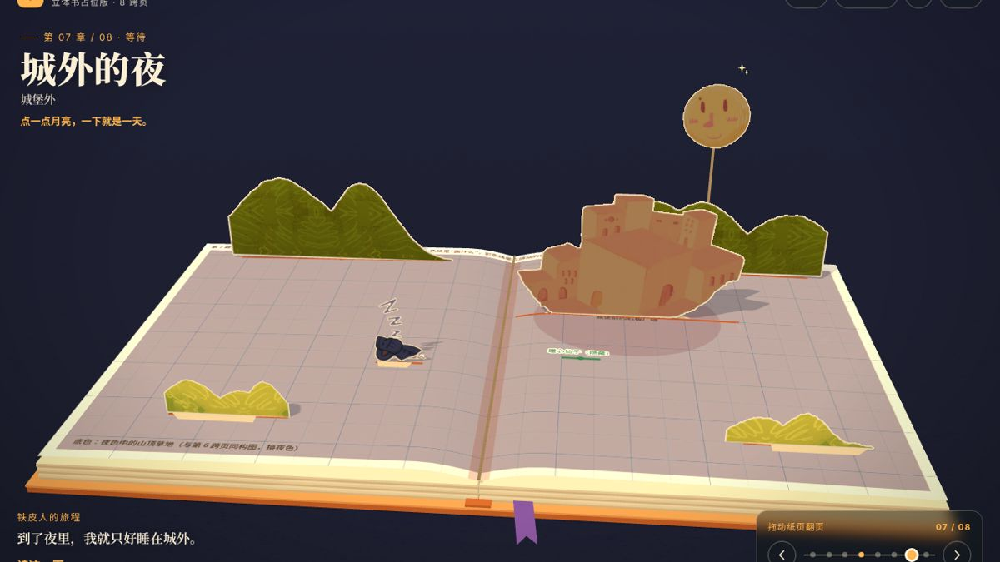
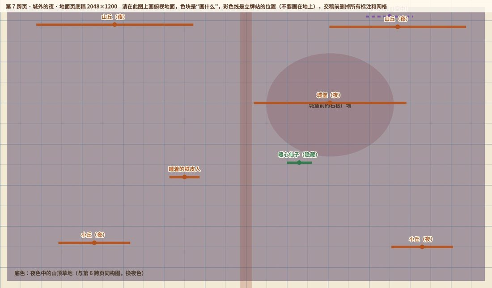
ground.png：照着色块画俯视地面，彩色线是立牌站的位置| 文件名 | 画什么 | 类型 | 参考原画 | 高度 | 状态 |
|---|---|---|---|---|---|
ground.png | 地面页（俯视） 2048×1200，照底稿画，删掉网格和标注 | 地面页 | 0563 0566 | — | 待画 |
moon.png | 笑脸月亮 临时抠图可用 | 机关件 | 0563 | 1.15 | 已有临时图，可直接用 |
castle-night.png | 城堡（夜） 由白天版调色得到，不用另画 | 立牌 | 程序调色 | 2.2 | 已有临时图，可直接用 |
tin-sleep.png | 睡着的铁皮人 | 立牌 | 0563 | 1.1 | 已有临时图，可直接用 |
第 8 跨页 · 暖心仙子 文件夹 ch8-warmth/ · 参考原画 0562 0561 0560 0559
这一页的玩法：读者把红心从仙子手里拖到铁皮人手心，小推车和行李出现，踏上新的旅行。
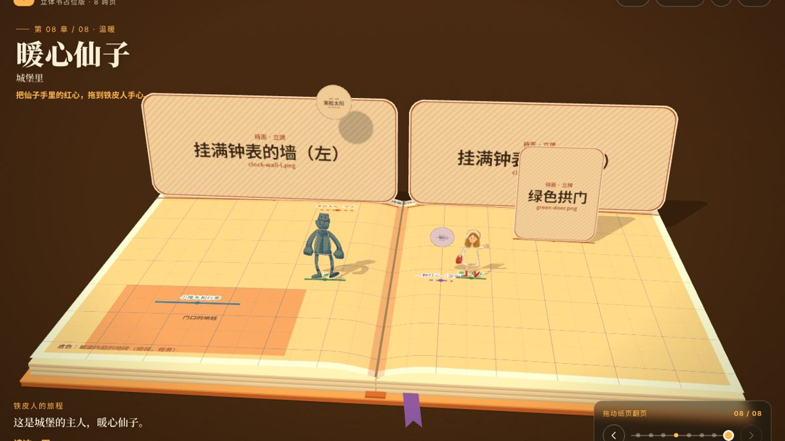
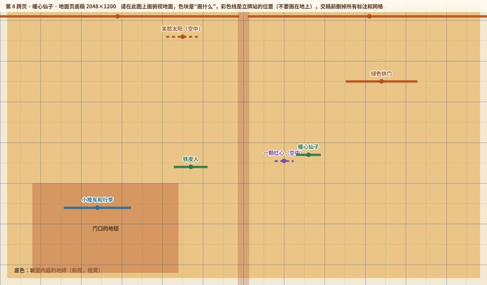
ground.png：照着色块画俯视地面，彩色线是立牌站的位置| 文件名 | 画什么 | 类型 | 参考原画 | 高度 | 状态 |
|---|---|---|---|---|---|
ground.png | 地面页（俯视） 2048×1200，照底稿画，删掉网格和标注 | 地面页 | 0562 0561 0560 0559 | — | 待画 |
clock-wall-l.png | 挂满钟表的墙（左） | 立牌 | 0561 / 0562 | 2.6 | 待画 |
clock-wall-r.png | 挂满钟表的墙（右） | 立牌 | 0561 | 2.6 | 待画 |
green-door.png | 绿色拱门 | 立牌 | 0562 / 0566 | 2.2 | 待画 |
sun-face.png | 笑脸太阳 | 立牌 | 0561 | 0.8 | 待画 |
heart.png | 一颗红心 机关：读者把它从仙子手里拖到铁皮人手心 | 机关件 | 0560 | 0.42 | 待画 |
cart.png | 小推车和行李 结局：踏上新的旅行 | 隐藏件（解谜后出现） | 0559 | 1.1 | 待画 |
交稿方式
铁皮的旅行-交稿/
├─ ch1-cave/ ground.png beam.png stalactite-l.png …
├─ ch2-forge/ ground.png anvil.png hammer.png …
├─ ch3-forest/ …
├─ ch4-seasons/ …
├─ ch5-mountain/ …
├─ ch6-summit/ …
├─ ch7-night/ …
├─ ch8-warmth/ …
├─ cast/
│ ├─ tin/ 左腿.png 右腿.png 后手.png 身体.png 头.png 眼睛.png 前手.png
│ ├─ fairy/ …
│ ├─ dwarf/ …
│ └─ worm/ 身体.png 眼睛.png
└─ 源文件/ 每张图的 Procreate 或 PSD（保留图层）从 Procreate 导出
- 立牌和地面页：只显示要导出的那一层，关掉背景色，选“操作 → 分享 → PNG”。
- 角色：关掉背景色，选“操作 → 分享 → 分享图层 → PNG 文件”，每个图层会各导出一张。导出的文件名是“作品名-1、作品名-2……”，从最下面的图层开始编号。按上面的图层顺序画，自检页就能自动认出每个部件；也可以手动改成中文部件名。
- 同时导出一份 PSD（“分享 → PSD”），放进“源文件”文件夹。
从 Photoshop 导出
“文件 → 导出 → 将图层导出到文件”，格式选 PNG-24，勾选“透明区域”，不要勾选“裁切图层”。
验收标准
前两列由自检页自动判断，全部变绿才算通过；第三列需要你自己确认。
| 类别 | 自检页会查 | 你自己确认 |
|---|---|---|
| 地面页 | 尺寸 2048×1200；整页铺满没有透明；网格线已删掉 | 是俯视；没画立起来的东西；没画影子；书缝两侧没有重要内容 |
| 立牌和道具 | 背景透明；边缘干净，没有半透明杂边和碎点；一张图只有一样东西；底边能站稳；尺寸合适；文件名在任务单里 | 是正面；被挡住的部分补全了；没画影子；没写正文文字 |
| 角色 | 所有部件画布一样大；部件齐全、不重复；背景透明；每个关节都和身体有重叠（转动不露缝）；有单独的眼睛层 | 和设定稿一致；眼睛层只有眼睛；线条粗细和原画一致 |
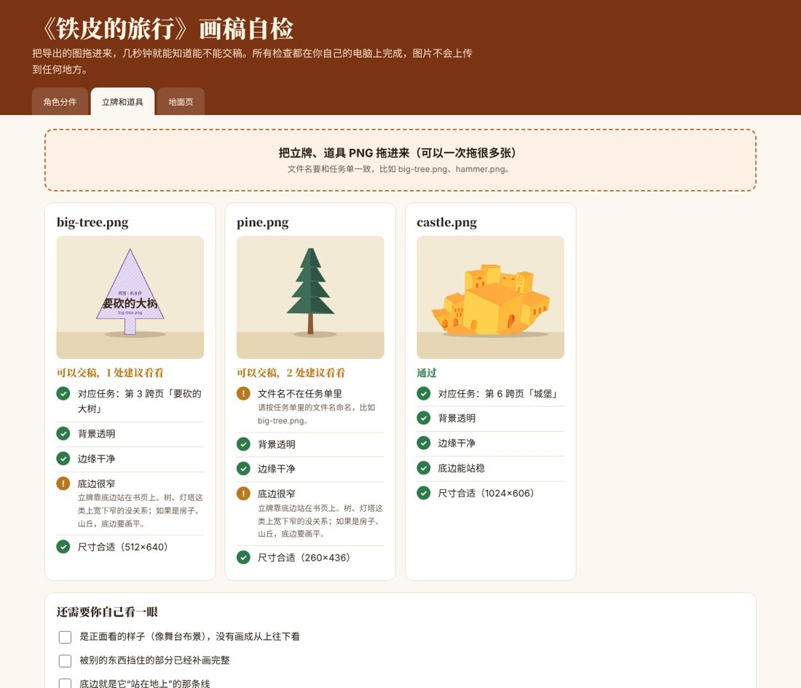